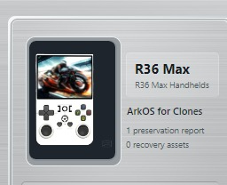

Un nombre. Varias preguntas que RLB debe responder antes de reconstruir nada.
El R36 Max es un buen ejemplo de por qué RLB es más que un copiador de tarjetas SD. El nombre impreso en la consola es solo el principio: identidad del dispositivo, pruebas de arranque, relaciones de firmware, compatibilidad de pantalla, contenido preservado y preparación para despliegue son cuestiones distintas.
REGISTRO DE DISPOSITIVO RLB

Esta tarjeta histórica se muestra solo como ejemplo de registro. El éxito de preservación se verifica desde el estado actual, no desde una etiqueta antigua.
DISPOSITIVOR36 MaxConsola retro portátil / familia de clones
CLAVE CANÓNICAr36-maxIdentidad actual de Runtime Knowledge
CONOCIMIENTO77%Confianza global actual
DESPLIEGUESTOP0 destinos validados en el estado capturado
Este es el punto clave: RLB puede tener una identidad canónica R36 Max y pruebas de hardware muy fuertes y aun así negarse a ofrecer un destino de despliegue porque faltan pruebas críticas de pantalla o recuperación.
1. Por qué un R36 Max no es simplemente “un R36 Max”
Las familias de consolas retro económicas pueden incluir revisiones, clones y variantes vendidas con nombres parecidos. Dos unidades con el mismo nombre pueden necesitar archivos de arranque, paneles, DTB o firmware diferentes.
ETIQUETANombre del productoContexto útil, pero insuficiente para demostrar placa o pantalla.
ARRANQUEDTB / pruebas de bootPueden aportar relaciones de hardware mucho más fuertes.
PANELVariante de pantallaPuede decidir si un firmware aparentemente compatible es realmente seguro.
FIRMWARECompatibilidadUna familia conocida no es automáticamente un destino validado para cada clon.
2. Primera regla: protege el medio original
La tarjeta de fábrica puede contener mucho más que carpetas de ROM: archivos de arranque, configuración, DTB, BIOS, metadatos, ilustraciones, partidas guardadas y archivos específicos del dispositivo repartidos en varias particiones.
1Conectar el medio originalNo modificarlo solo para facilitar la inspección.
→
2Analizar en solo lecturaRecopilar pruebas antes de aprobar trabajo de escritura.
→
3Revisar identidadComprobar que el resultado realmente coincide con el dispositivo.
→
4Ejecutar protecciónEstablecer las representaciones necesarias y el contenido retenido.
→
5VerificarConfiar en el estado verificado, no solo en que una copia terminó.
3. RLB identifica a partir de pruebas
En este caso real, Runtime Knowledge resuelve la clave canónica r36-max y muestra pruebas Clone / Fingerprint muy fuertes. Eso tiene más valor que ver “R36 Max” impreso en la carcasa.
DISPOSITIVO OBSERVADOR36 MaxProducto físico y medio inspeccionado.
+
PRUEBASBoot / huella / pistas de hardwarePruebas específicas del dispositivo y relaciones conocidas.
→
IDENTIDAD CANÓNICAr36-maxIdentidad normalizada usada por Knowledge y Readiness.
4. La preservación separa lo reutilizable de lo específico
RLB no necesita crear una segunda copia completa de cada elemento reutilizable. Si la Biblioteca verificada puede representar ese contenido de forma segura, esa representación puede contabilizarlo. Lo que no puede representarse de forma segura permanece retenido con la preservación.
BIBLIOTECA REUTILIZABLEContenido que puede representar la fuente con seguridadJuegos, BIOS, medios u otro contenido gestionado y verificado cuando se cumple la regla aplicable.
PRESERVACIÓN R36 MAXLo que sigue siendo específico o no resueltoArchivos de arranque, configuración, partidas y otros elementos que todavía no pueden representarse con seguridad.
5. Retenido hoy no significa retenido para siempre
Una vez creada la preservación, su contenido retenido verificado puede reevaluarse más tarde sin volver a la tarjeta SD original. Para eso existe Reconcile Retained Content.
Contenido retenido preservadoYa capturado con la preservación R36 Max.
→
Analyze / PreviewPreguntar qué puede representar ahora la Biblioteca actual.
→
Apply confirmadoEstablecer representaciones válidas y dejar visibles los elementos no resueltos.
6. Éxito de preservación y preparación para despliegue son cosas distintas
Device Readiness conoce el dispositivo canónico, pero el estado capturado aún rechaza el despliegue.
86%HardwareConocimiento de hardware fuerte
0%PanelPanel desconocido
70%FirmwareÚtil, pero insuficiente sin prueba de panel
25%AlmacenamientoConocimiento de boot/almacenamiento incompleto
0%RecuperaciónPruebas incompletas
100%Clone / FingerprintIdentificación fuerte
7. El resultado real de Device Readiness
R36 MAX — DEVICE READINESS REALEstado capturado: identidad r36-max, confianza global 77%, pero 0 destinos desplegables. Veredicto: STOP — no es seguro desplegar.
8. Por qué RLB dice STOP incluso con identificación fuerte
La razón de bloqueo aparece claramente: faltan pruebas del panel, por lo que el firmware todavía no puede considerarse seguro. La recuperación también está incompleta. Una huella de clon fuerte no demuestra que la pantalla exacta sea compatible con una combinación firmware/DTB concreta.
9. 77% de confianza no significa “77% seguro”
La confianza global resume el conocimiento disponible. La seguridad del despliegue es una compuerta. Un solo requisito ausente puede bloquear el despliegue.
CONFIANZA DE CONOCIMIENTO77%RLB sabe bastante sobre este R36 Max.
≠
SEGURIDAD DE DESPLIEGUESTOPLas pruebas necesarias para un destino validado no están completas.
10. Qué acercaría este R36 Max al despliegue?
1Diseño de boot / almacenamientoReforzar el conocimiento de cómo arranca y particiona el dispositivo real.
2Soporte de panel en firmwareDemostrar que el firmware propuesto admite la relación exacta de pantalla.
3Identificación de panel / DTBVincular pruebas device-tree con una variante de hardware conocida.
4Pruebas de recuperaciónEstablecer suficiente conocimiento de preservación y recuperación.
11. Qué añade RLB que una simple imagen SD no añade
SOLO COPIAR LA TARJETA“Tengo una copia de seguridad.”Puede que hayas copiado bytes sin saber qué variante tienes, qué contenido es reutilizable o si una reconstrucción es compatible.
→
CON RLB“Sé qué pruebas tengo.”Identidad, contenido preservado, representación reutilizable, material específico del dispositivo, procedencia y bloqueos permanecen separados y visibles.
12. Qué no hace deliberadamente este recorrido
Esta página no te dice que grabes una imagen de firmware concreta en el R36 Max mostrado. El estado capturado no tiene ningún destino validado; dar una receta de despliegue contradiría las pruebas.
×Sin destino adivinadoUna recomendación no es lo mismo que un destino validado.
×Sin panel / DTB adivinadoLa falta de pruebas del panel es precisamente el motivo del bloqueo.
×Sin instrucción de borrar la tarjeta originalEl medio original sigue siendo valioso hasta cumplir los requisitos de preservación y recuperación.